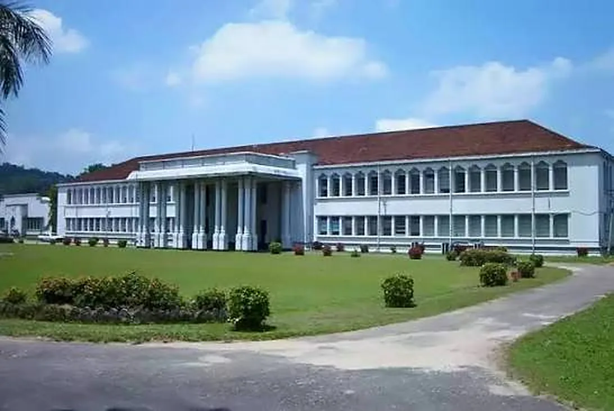
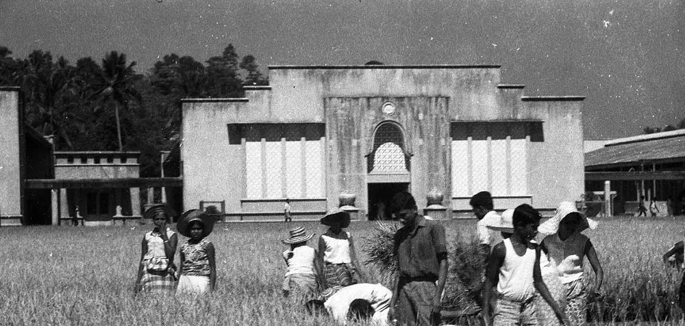

University of Peradeniya, Faculty of Engineering
The first engineering faculty in Sri Lanka, founded in 1950.
About the faculty
The Faculty of Engineering is part of the University of Peradeniya in Peradeniya, Sri Lanka. It opened in 1950 as the country's first engineering faculty and has been on its current campus since 1964.
Students can earn the Bachelor of the Science of Engineering Honours degree in six specializations. Optimum Racing is the university's Formula Student team.
- Founded
- 1 July 1950, in Colombo
- At Peradeniya since
- 1964
- Departments
- Eight: Chemical and Process, Civil, Computer, Electrical and Electronic, Manufacturing and Industrial, and Mechanical Engineering, plus Engineering Mathematics and Engineering Management
- Students
- Around 2,200, undergraduate and postgraduate
- Academic staff
- Over 100 with doctoral qualifications
- Address
- Faculty of Engineering, University of Peradeniya, Prof. E.O.E. Pereira Mawatha, Peradeniya 20400, Sri Lanka
- Website
- eng.pdn.ac.lk
A short history
The University of Ceylon, Sri Lanka's first university, was founded in 1942, and the University of Peradeniya grew out of it. On 1 July 1950 it opened a Faculty of Engineering in Colombo, the first in the country, with Prof. E.O.E. Pereira entrusted with setting it up. Civil, Electrical and Mechanical Engineering were its founding departments. From 1953 to 1964 teaching continued in temporary buildings on Thurstan Road, and in 1964 the faculty moved to its permanent home at Peradeniya. It took its present name in 1978, after the University of Sri Lanka was dissolved, and in 2025 it marked 75 years of engineering education.
